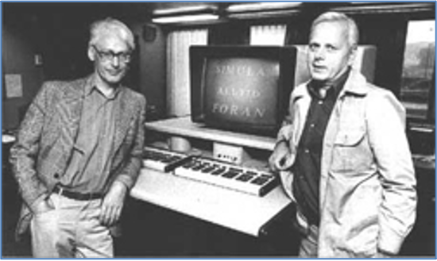
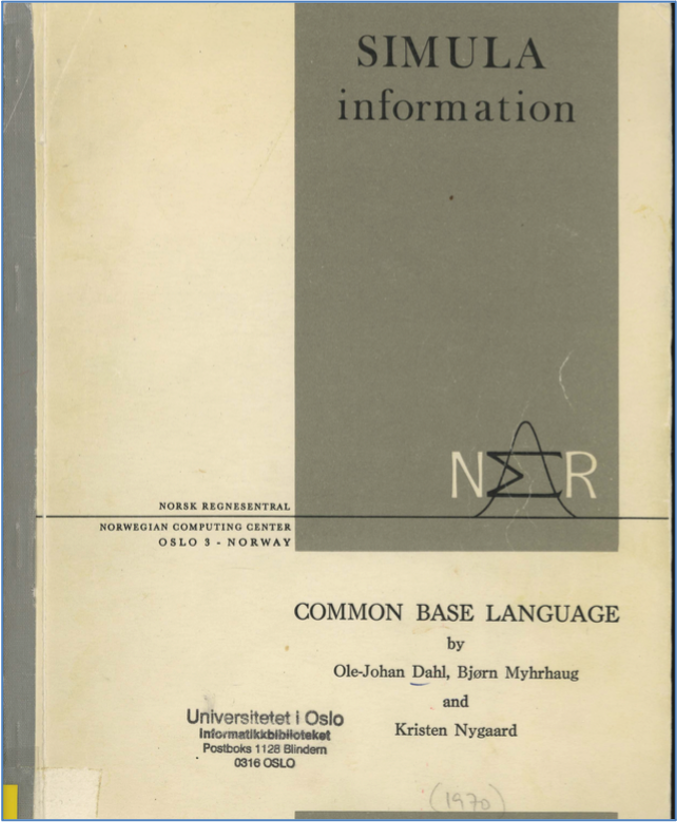
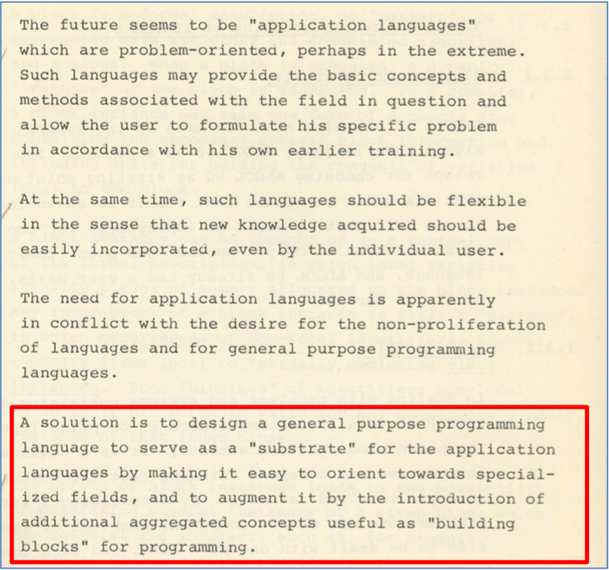
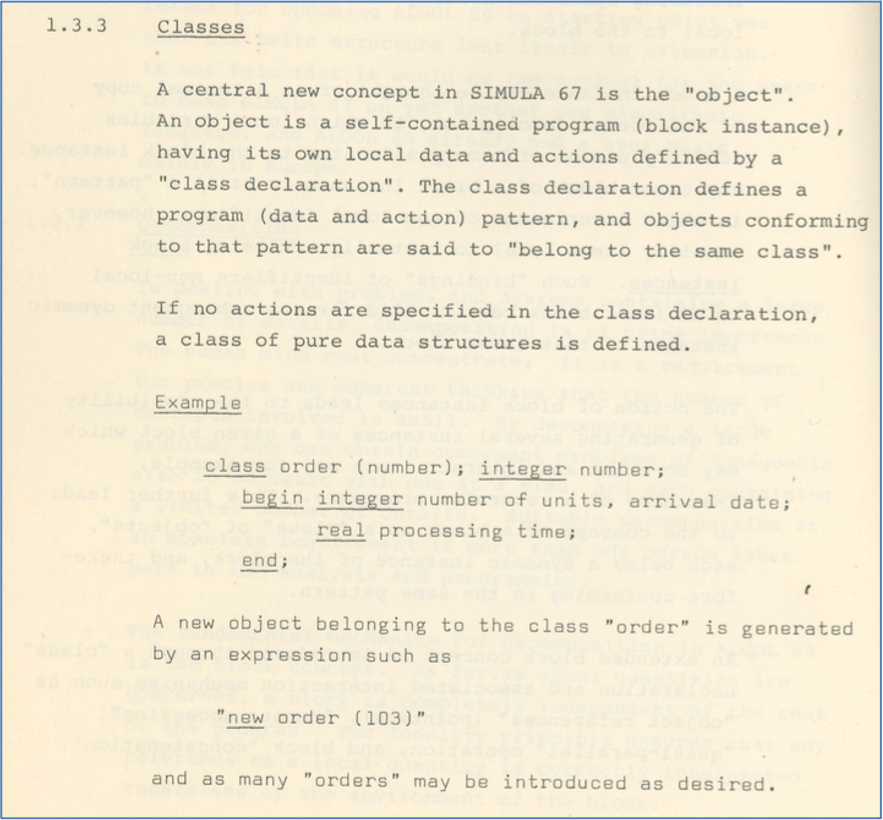

2.25. Considerações Finais
Linguagens de programação (Seção 2.1):
Aprendemos o que é uma linguagem de programação de alto nível. A Figura 2.23 mostra a diferença entre uma linguagem de alto nível e uma linguagem de baixo nível.
{kind=link}
Figura 2.23 - Linguagens de Alto Nível x Linguagens de Baixo Nível.
Fonte: Schmalz [66].
Python é uma linguagem de programação de alto nível e de propósito geral
Tipos de dados primitivos (Seção 2.3):
Um bom tutorial sobre os tipos de dados elementares ou primitivos de Python pode ser encontrado em [73].
Tipo lógico e expressões lógicas (Seções 2.9 e 2.11):
O tipo lógico e as expressões lógicas são muito utilizadas na construção de programas.
Todos devem dominar a tabela verdade dos operadores and, or e not.
Estruturas condicionais e de repetição (Seções 2.12, 2.13, 2.20 e 2.21)
As estruturas condicionais e de repetição são importantes para controlar o fluxo de execução de um programa.
Laços do tipo
forsão indicados quando temos que iterar (acessar ou atravessar) por uma coleção de objetos (ou itens).Laços do tipo
whilesão indicados quando temos uma condição a ser verificada a cada iteração.Podemos modificar o fluxo de um laço através dos comandos
breakecontinue.
Tipo str (Seção 2.14):
Em Python usamos o tipo
strpara representação e manipulação de strings.O tipo string é apenas um dos tipos de sequência disponíveis em Python.
Existem diversas operações comuns entre os tipos denominados de sequência, como Tuplas, Listas, e Ranges.
Strings em Python são sequências imutáveis. Em linguagens como C++ é possível alterarmos os caracteres da string diretamente.
Listas (Seção 2.16.3):
O tipo de dados lista é uma das estruturas mais utlizadas da linguagem Python.
Cada item de uma lista é identificado por um índice.
Listas são sequências mutáveis, isto é, podemos incluir novos elementos ou remover elementos existentes.
List Comprehension é um idioma muito comum da programação em Python.
Dicionários (Seção 2.17):
Dicionários são práticos para agrupar dados.
Para mais informações sobre o tipo
dict(dicionário) em Python, consulte [74] e [69].
Conjuntos (Seção 2.18):
Funções (Seção 2.23):
Funções permitem organizar o código de maneira mais efetiva.
Os parâmetros
*argse**kwargssão usados na definição de funções com número variável de parâmetros. Bibliotecas como a Matplotlib utilizam bastante esses tipos de parâmetros para fornecer maior flexibilidade na chamada de funções e métodos das funcionalidades providas por ela. A partir da 3.6, a linguagem Python adotou uma implementação do tipo dicionário onde os pares chave-valor (key-value pairs) são ordenados. Em versões anteriores, não havia a garantia de ordenação.Toda função em Python retorna algum valor. Caso o comando return seja usado sem valor, o valor
Noneé retornado. Se você não incluir um comandoreturnno bloco de comandos da função ou se por acaso algum caminho da sua função fizer com que ela termine sem uma instruçãoreturn, automaticamente será retornado o valorNone.Quando definimos um parâmetro com valor default, devemos tomar cuidado ao usar valores mutáveis. Observe o exemplo abaixo:
def MinhaFuncao(data=[]): data.append(9) return data MinhaFuncao() MinhaFuncao() MinhaFuncao()
Como pode ser observado, a lista continua crescendo à medida que usamos a função
MinhaFuncao. Isso ocorre porque o valor da expressão com o valor default é realizado apenas uma única vez, quando a função é definida. Por conta dessa “armadilha”, em geral, definimos funções como essas da seguinte forma:def MinhaFuncao2(data=None): if data is None: data = [] else: data.append(9) return data MinhaFuncao2() MinhaFuncao2([3]) MinhaFuncao2([4])
Python:
Por convenção, programas Python possuem nomes com a extensão
.py.É muito comum escutarmos dizer que Python é uma linguagem de script:
Muitas pessoas usam o termo script ao invés de programa para se referir ao arquivo contendo código fonte em Python.
Python também é muito usada para criação de scripts executados na linha de comando (shell) para automação de tarefas como processamento de textos e execução de outros programas.
Estruturas de dados:
Para mais detalhes sobre as estruturas de dados de Python, consulte [4].
Em geral, as linguagens de programação possuem construtores que permitem criar novos tipos a partir dos tipos básicos ou elementares. Por exemplo, um tipo para manipulação de números complexos, com a parte real e imaginária, ou um tipo tipo para manipulação de pontos no plano cartesiano. Em linguagens como C e C++, existe um construtor chamado
structque permite criar um novo tipo estruturado formado por elementos de outros tipos. Este construtor permite criar uma espécie de tipo composto. Wirth [89] lembra que este tipo composto é chamado de Produto Cartesiano na matemática.
Nota Histórica
Ole-Johan Dahl e Kristen Nygaard (Tabela 2.13) são considerados os pais da Programação Orientada a Objetos (POO). Nos anos 60, no Centro de Computação da Noruega, eles lideraram o desenvolvimento da família de linguagens de programação conhecida como SIMULA. A versão SIMULA 67 (1965-1968) introduziu uma nova abstração, a classe (class), como destacado no trecho do manual mostrado na Tabela 2.13.
 Ole-Johan Dahl e Kristen Nygaard |
 |
 |
 |